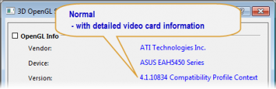
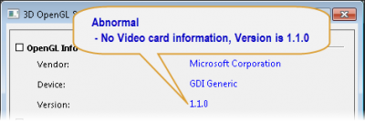
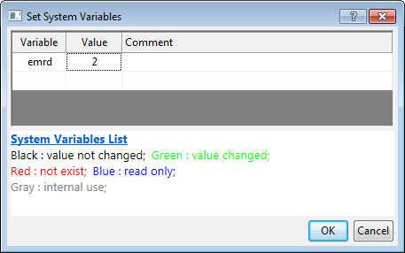
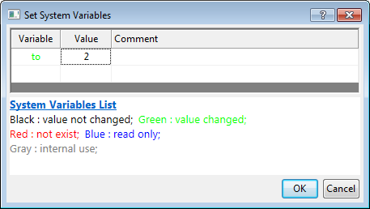

FAQ-443 Warum ist der Text verzerrt, wenn ich mein Diagramm exportiere oder eine Seite kopiere und in Word oder PowerPoint einfüge?
TextDistorted-in-ExpGraph
Letztes Update: 15.12.2022
Sollten Sie das Problem haben, dass der Bildtext in der Ausgabe verzerrt ist (z. B. vertikal schief, gequetschte Schrift, Fehler bei den Schriftabständen etc.), wenn Sie versuchen, das Origin-Diagramm in Vektorbilder zu exportieren oder die Seite zu kopieren und in Word oder PowerPoint einzufügen, können die Gründe folgende sein:
- Wählen Sie im Menü Einstellungen: 3D-OpenGL-Einstellungen, um den Dialog zu öffnen. Sie können die Informationen Ihrer Grafikkarte im Dialog finden.
 
Normale Informationen der Grafikkarte
Wenn die Informationen der Grafikkarte normal sind, die Texte aber im exportierten Diagramm noch verzerrt sind, überprüfen Sie bitte folgende Ursachen.
Inkompatibilität mit Ihrem Standarddruckertreiber
- In diesem Fall können Sie versuchen, den aktiven Drucker/Druckertreiber in Ihrem Computer zu ändern und das Diagramm mit einem neuen aktiven Drucker/Druckertreiber erneut zu exportieren.
Die verwendeten Schrifttypen in dem exportierten Diagramm fehlen auf ihrem lokalen System
- Sollte dies der Fall sein, können Sie versuchen, die entsprechende Schriftart zu installieren oder die Schriftart auf ihrem Diagramm zu ändern.
Die Regions- und Spracheinstellung des Betriebssystems ist nicht Englisch.
- Sie können die Einstellung in der Systemsteuerung von Windows ändern.
Die Seite wird kopiert und in eine alte Office-Version eingefügt
- Es gibt Berichte, dass Texte bei Verwendung älterer Office-Versionen wie 2003 nicht gut aussehen.
- Sie können versuchen, eine neuere Office-Version zu verwenden, und prüfen, ob das hilft.
Nicht normale Informationen der Grafikkarte
Wenn die Informationen der Grafikkarte nicht normal sind, können mögliche Gründe folgende sein:
Probleme der Grafikkarte
- Ihr Anzeigeadapter könnte Probleme haben. Bitte tun Sie Folgendes, um sicherzugehen, dass er richtig funktioniert:
- - Installieren Sie den neuesten Chipsatz-Treiber für das Motherboard.
- - Installieren Sie die neuesten Display-Treiber.
- - Führen Sie physische Prüfungen durch. Entfernen Sie die Grafikkarte und setzen Sie sie wieder ein. Entfernen Sie die zusätzlichen Stromkabel und verbinden Sie sie wieder.
Verwendung von Remote Desktop oder Virtueller Maschine
- Seit Origin 9.1 SR3 enthält Origin die Systemvariable @EMRD. Sie steuert, wie Text beim Exportieren als Vektordatei oder Kopieren der Seite aus Origin in Word bzw. PowerPoint gezeichnet wird, wenn ein Remote Desktop oder eine virtuelle Maschine verwendet wird.
-
Wenn Sie den Text in der Ausgabe verzerrt angezeigt bekommen, stellen Sie mit den untenstehenden Schritten sicher, dass @EMRD auf 2 gesetzt ist. Dies ist der Standardwert. Diese Einstellung führt zu polygonalem Zeichnen von Textobjekten in der Ausgabe.
- Wählen Sie Einstellungen: Systemvariablen.
- Fügen Sie die Systemvariable EMRD im Dialog ein, wie unten zu sehen.
- 
- Wenn der Text nicht verzerrt ist, Sie sich aber Gedanken um die Qualität des Textes in der Ausgabe machen, dann setzen Sie die Systemvariable @EMRD auf 0.
Keine offensichtlichen Gründe
-
Wenn keine der obigen Lösungen das Problem behebt, das Problem des Textexports aber weiterhin bei EPS-, PDF- oder OLE-Diagrammen in Word besteht, versuchen Sie, die Systemvariable @TO mit den untenstehenden Schritten auf 2 (oder 1) zu setzen.
- Wählen Sie Einstellungen: Systemvariablen.
- Fügen Sie die Systemvariable TO im Dialog ein, wie unten zu sehen.
- 
Hinweise: Beachten Sie, dass die Einstellung der Systemvariablen @TO bzw. @EMRD in gezackten Bildern des Texts resultieren kann. Um gezackten Text in exportierten Diagrammen zu vermeiden, können Sie das Diagramm mit einer höheren Auflösung unter Zuhilfenahme der untenstehenden Anleitung exportieren.
- Zum Kopieren von Seite aus Origin in Word setzen Sie die Auflösung im Dialog Optionen auf 600 oder sogar 1200 DPI.
- Zum Exportieren von Diagrammen in Vektorbilder (EPS, PDF etc.) setzen Sie die Auflösung im Dialog Grafiken exportieren auf 600 oder sogar 1200 DPI.
|
Schlüsselwörter:gequetschte Schrift, Textverzerrung, Zeichenabstände, Exportprobleme, PDF, EPS, EMF, Word, PowerPoint